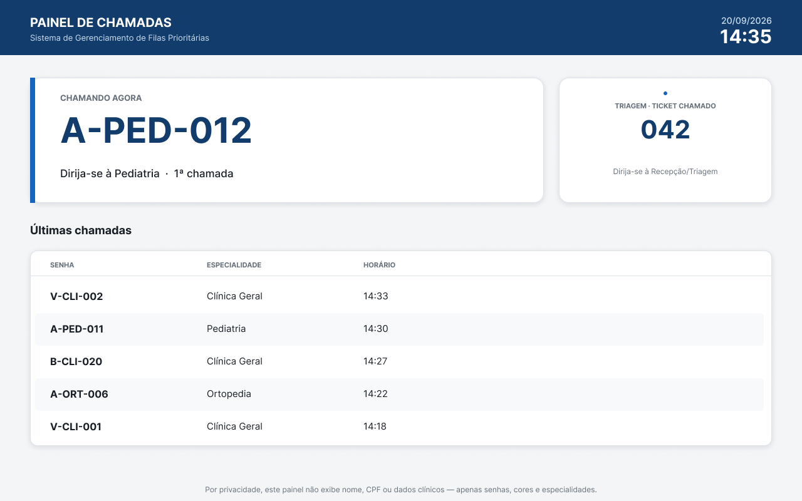
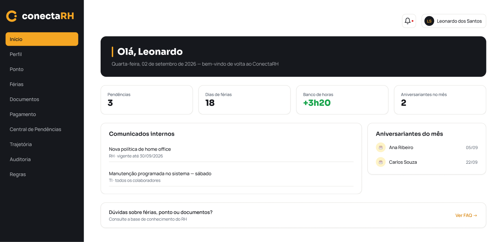

Projetos
Em desenvolvimento

01
Fila Prioritária — Pronto-Socorro
Sistema que organiza a fila de um PS pela gravidade clínica, não pela ordem de chegada — triagem, direcionamento por especialidade e painel público sem dados pessoais.
Ver repositório →
Em desenvolvimento

02
ConectaRH
Plataforma que centraliza o ciclo de vida do colaborador — ponto, férias, documentos e desligamento — com quatro perfis de acesso e auditoria de cada decisão.
Ver repositório →
Protótipo

03
Sabor Local
Protótipo de app de delivery focado em culinária mineira — login, cardápio por categoria, carrinho, pagamento e acompanhamento do pedido.
Ver protótipo →
Repositório privado
04
Bot de Finanças
Bot de Telegram que registra gastos, recebimentos, faturas, investimentos e empréstimos direto num dashboard de finanças pessoais no Notion — com rotina diária automática de avisos e fechamento do mês.
Código fonte privado